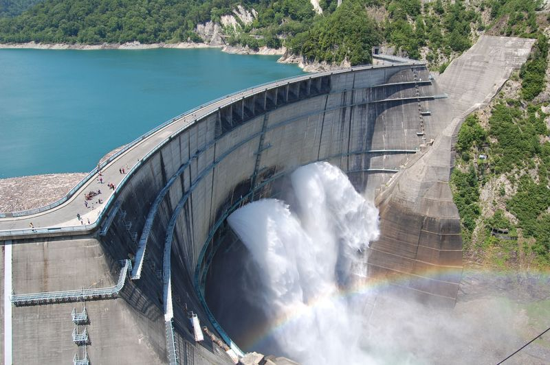
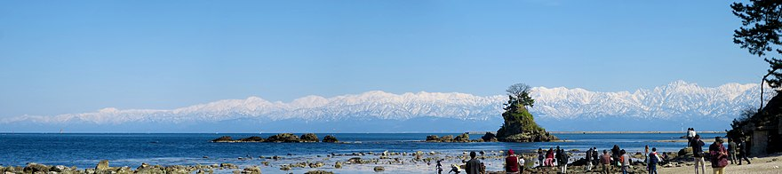
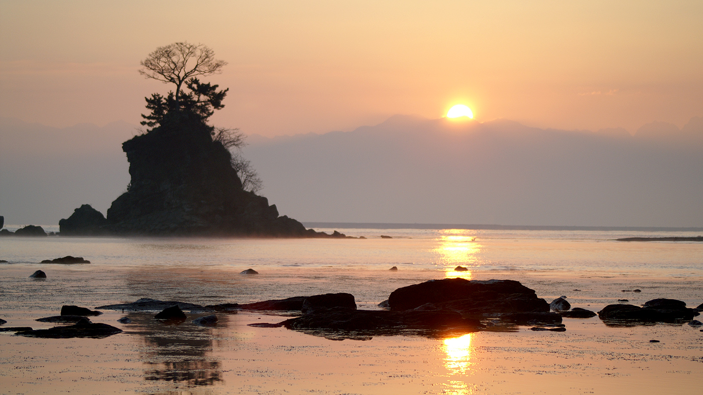
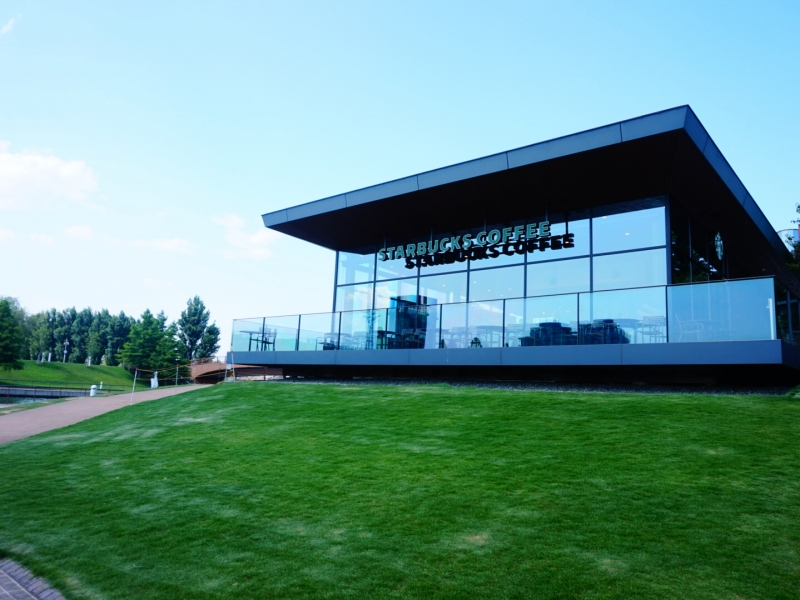
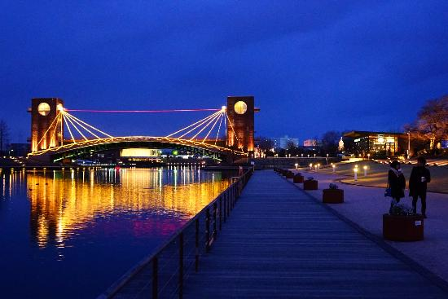
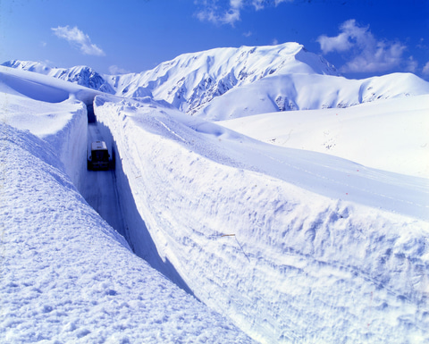

富山県の観光スポット
富山県にあるおすすめの観光地を紹介します！
- ○黒部ダム
- 黒部ダムは日本最大級のアーチ式ダムです。
- 初夏から秋には観光放水も行われ、日本一を誇る高さから水煙を上げて水が流れ落ちるのは大迫力です。

- ○雨晴海岸
- 能登半島国定公園に含まれ、岩礁が多く白砂青松の景勝地です。
- 富山湾越しに3000メートルの級の立山連峰を望むことができます。
- 「白砂青松百選」「日本の渚百選」にも選定されています。


- ○環水公園
- 運岩運河を囲むように広がり、芝生が広がる緑豊かな園内にはスターバックスがあります。
- このスターバックスは世界一美しいといわれ、素晴らしい景色です。


- ○雪の大谷
- 雪の大谷は、立山黒部アルペンルートが全線開通する4月中旬から6月中旬に出現します。
- 500メートルにわたって続く雪の壁で、その高さは20メートルに達することもあります。

1度は見てみたい景色や自然がいっぱいあります！
ホームに戻る